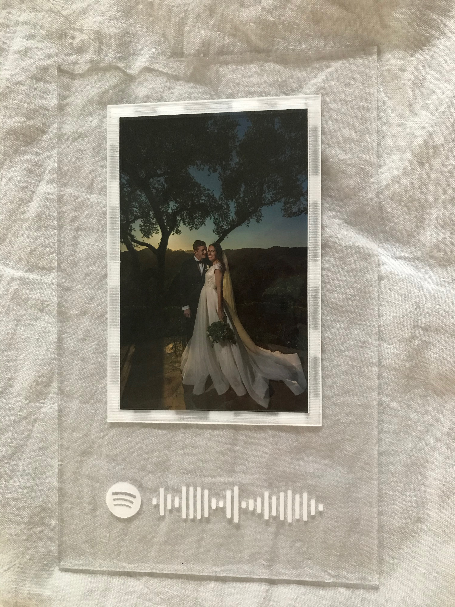

What I Made
I cut a frame out of acrylic and engraved the song that we played at our wedding. This picture is what it looked like right after it came out of the printer. It still has a protective sticker that I hadn't peeled off yet.
Plans
I designed the frame on the Glowforge website using different sized rectangles. I took a screenshot of the Spotify code that is a link to the song on Spotify. If I scan the code on the frame it will play the song automatically. This picture is a little hard to see but the design is outlined in light gray. I made it off to the side so I could actually see what I was doing and get the proportions right, but when I went to print it I had to reposition the whole thing.
Materials
I cut the frame out of Medium Clear Acrylic. Overall it took somewhere around 35 minutes to cut and engrave.
The Final Product
I'm really happy with the way this turned out. It's a little hard to see with the light background but the acrylic was very reflective and I didn't want to turn into a weird "People Taking Pictures of Mirrors" picture.
